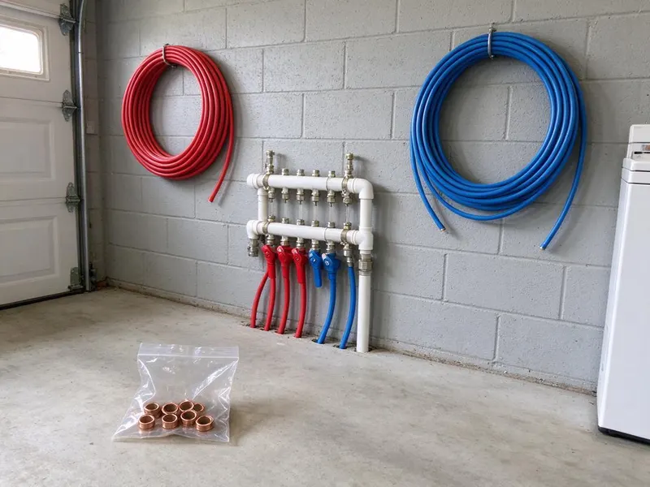
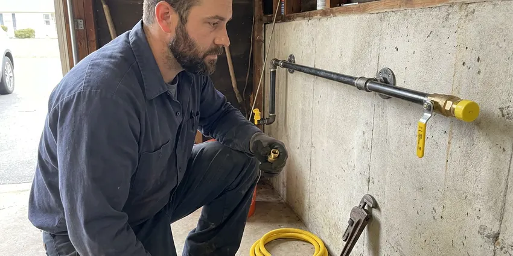

Plumbing Installation in Mansfield, TX
Need new plumbing installed in your Mansfield home? DFJ Plumbing provides professional, code-compliant services for all your water and gas line needs across Texas.
- Fast, Free Estimates
- Licensed Texas Plumbers
- Guaranteed Workmanship
- Local Mansfield Experts
Your Go-To for Plumbing Setups in Mansfield, TX.
Let our experienced team handle your next plumbing installation with confidence.
Your Trusted Partner for Plumbing Installation in Mansfield, TX
DFJ Plumbing specializes in comprehensive plumbing installation throughout Mansfield, TX. We understand the specific demands of Texas homes, from hard water challenges to foundation types, ensuring every installation, whether it is a new water heater or a complete repipe, meets local codes and performs optimally for years.
Our expertise includes:
- Water heater and tankless unit installations
- Gas line and water line replacements
- Sump pump and sewage ejector setups

Additional Plumbing Installation Services in Mansfield, TX
We install water heaters, pumps, lines, and fixtures across Mansfield, TX with careful, permitted work that passes inspection the first time.


Customers
Why Choose DFJ Plumbing for Plumbing Installation in Mansfield, TX?
We pride ourselves on transparent pricing and clear communication, ensuring you understand every step of your plumbing installation project. Our goal is to provide lasting solutions that bring you peace of mind.
- Local Expertise, Our team understands the specific plumbing challenges and codes in Mansfield, TX.
- Quality Materials, We use durable, reliable plumbing components from trusted manufacturers for every job.
- Code Compliance, All installations meet or exceed local plumbing codes for safety and performance.
Citywide Coverage
DFJ Plumbing proudly serves every neighborhood and surrounding community in Mansfield, ensuring that expert plumbing installation is always within reach. Whether you are in the heart of the city or on the outskirts, our team is ready to provide prompt and professional service for your home.
Experienced Team
Our team of plumbers at DFJ Plumbing brings years of hands-on experience in every type of plumbing installation. They are continuously trained on the latest techniques and technologies, ensuring your project is handled with the highest level of skill and precision.
Safety-First Approach
Safety and code compliance are paramount in every plumbing installation we undertake at DFJ Plumbing. We meticulously adhere to all Texas and local Mansfield building codes, ensuring your new plumbing systems are safe, reliable, and pass all necessary inspections.
Trusted Certified Mansfield Plumbing Services Professionals
At DFJ Plumbing, we take pride in providing certified plumbing services throughout Mansfield, TX. Backed by recognized industry credentials, our experienced plumbers combine technical skill with genuine customer care. Whether it is repair, installation, or maintenance, we follow strict safety and quality standards to deliver lasting results you can trust.
Call Us Now PHCC Plumbing Contractor Recognition
PHCC Plumbing Contractor Recognition Better Business Bureau (BBB) Accreditation
Better Business Bureau (BBB) Accreditation Angi Certified Pro
Angi Certified Pro ISO 9001 Quality Management Certification
ISO 9001 Quality Management CertificationDependable Plumbing Installation Services in Mansfield, TX
Water Heater Installation in Mansfield
DFJ Plumbing specializes in installing all types of water heaters, including conventional tank models and advanced tankless units, for homes in Mansfield. We help you select the right size and energy source, gas or electric, to meet your family's hot water demands and budget. Proper venting and connection to existing lines are critical for safety and efficiency, especially with gas units, and our certified plumbers ensure a flawless setup. We also handle the safe disposal of your old unit.

Gas Line Installation in Mansfield, TX
Whether you are adding a new gas appliance, converting to natural gas, or need a new line run for an outdoor kitchen, DFJ Plumbing provides safe and compliant gas line installation in Mansfield, TX. Our licensed technicians handle everything from sizing the line to trenching, ensuring all connections are leak-free and meet strict local codes. Gas line work requires specialized tools and expertise to prevent dangerous leaks, making professional installation essential for the safety of your home.
Sump Pump and Sewage Ejector Pump Installation in Mansfield
Protecting your Mansfield home from water damage is crucial, especially in areas prone to heavy rains or with basements. DFJ Plumbing installs reliable sump pumps to remove excess water from crawl spaces and basements. For homes with plumbing fixtures below the main sewer line, we also install robust sewage ejector pumps to safely move wastewater. Proper sizing and placement are key, and we ensure your pump has a dedicated circuit and correct discharge piping for optimal performance.
Water Softener Installation in Mansfield, TX
Texas is known for its hard water, which can damage appliances and leave mineral buildup. DFJ Plumbing installs efficient water softener systems in Mansfield, TX to protect your plumbing and improve water quality. We assess your home's water hardness and usage to recommend the right system, whether it is a salt-based ion exchange or a salt-free conditioner. Proper bypass valve installation and connection to your main water line are essential for easy maintenance and effective operation.
Water Line Installation and Replacement in Mansfield
From replacing old, corroded pipes to installing new water lines for additions or renovations, DFJ Plumbing provides comprehensive water line installation in Mansfield. We work with various materials, including PEX and copper, ensuring durable, leak-free connections. In Texas, soil conditions can impact buried lines, so we use techniques that minimize future issues. We also ensure proper pressure regulation and backflow prevention devices are installed where needed to protect your potable water supply.
Electric Tankless Water Heater Installation in Mansfield, TX
For endless hot water on demand and energy savings, consider an electric tankless water heater installation from DFJ Plumbing in Mansfield, TX. These compact units heat water only as needed, eliminating standby heat loss. While they require significant electrical capacity, our electricians work alongside our plumbers to ensure your home's electrical panel can handle the load. We handle all plumbing connections, ensuring proper flow rates and temperature settings for consistent hot water.
Backflow Preventer Installation in Mansfield
Backflow preventers are critical for protecting your home's drinking water from contamination, especially for irrigation systems, fire suppression lines, or homes with private wells. DFJ Plumbing installs and tests backflow prevention devices in Mansfield to ensure your water supply remains safe and compliant with health codes. We ensure the correct type of device is installed for your specific application and that it is properly maintained and tested annually.

PEX Pipe Installation in Mansfield, TX
PEX piping has become a popular choice for new plumbing installations and repipes in Mansfield, TX due to its flexibility, durability, and resistance to corrosion. DFJ Plumbing expertly installs PEX piping for water supply lines, offering a cost-effective and long-lasting alternative to copper. Its ability to expand makes it more resistant to freeze damage, a significant advantage during occasional Texas winter freezes. We ensure all connections are secure and leak-free.
Plumbing Installation Near Me in Mansfield, TX
When you search for "plumbing installation near me" in Mansfield, you want a local company that understands the unique needs of Texas homes. DFJ Plumbing is your reliable choice, offering prompt service and expert installation for all your plumbing systems. We are deeply familiar with the local infrastructure and common plumbing issues in Texas.
Our team at DFJ Plumbing is dedicated to serving the Mansfield community with high-quality plumbing installation services. We are always just a call away, ready to provide efficient and dependable solutions right in your neighborhood. Trust us for installations that last.
DFJ Plumbing at a Glance
- Licensed and insured plumbers serving Mansfield, TX
- Same-day appointments and 24/7 emergency response
- Clear written estimates, no hidden fees
- 4.9-star rated by 812+ Texas customers
Mansfield Map
Mansfield Information
- Population
- 78,542
- Area codes
- 682/817/469
- Service area
- Mansfield and communities within 40 miles
- Nearby
- Arlington, Cedar Hill, Grand Prairie, Burleson
Proper plumbing installation is crucial for homes in Mansfield, TX, where hard water can accelerate pipe corrosion and occasional freezes demand robust, well-insulated systems to prevent costly damage.
Expert Services
Trust our professionals for reliable DFJ Plumbing solutions in Mansfield, TX.
Our Specialized Plumbing Services in Mansfield, TX
At DFJ Plumbing, we provide a complete range of plumbing services across Mansfield, TX. From leak detection to full system installations, our team ensures fast, precise, and affordable service for both residential and commercial properties. Explore our core services below:


How Our Plumbing Installation Process Works in Mansfield, TX
At DFJ Plumbing, we make plumbing installation in Mansfield, TX straightforward and stress-free. Our process is designed for efficiency and clear communication.
Request a Quote
Contact us at (737) 405-5978 to schedule an on-site consultation for your plumbing installation project. We will discuss your needs and provide a detailed, transparent estimate.
Site Assessment
Our expert plumbers will visit your Mansfield property to assess the site, confirm measurements, and finalize the scope of work. This ensures accurate planning and material selection.
Professional Installation
We will perform the installation with precision, adhering to all local codes and using quality materials. Our team works efficiently, minimizing disruption to your home.
Frequently Asked Questions About Plumbing Installation in Mansfield
The cost of plumbing installation in Mansfield varies widely depending on the type of service. A basic water heater installation might range from $1,200 to $2,500, while a complex gas line installation could be $800 to $3,000 or more. Factors like material costs, labor, and the complexity of the job all influence the final price. We provide detailed, upfront quotes after an on-site assessment.
Installing a water softener in Texas homes is highly beneficial due to the region's hard water. It prevents mineral buildup in pipes and appliances, extending their lifespan and improving efficiency. Softened water also leaves skin and hair feeling cleaner and helps soaps and detergents lather more effectively, reducing their usage.
A sump pump is designed to remove clear groundwater that collects in a sump pit, typically in a basement or crawl space, to prevent flooding. A sewage ejector pump, on the other hand, handles wastewater containing solids from plumbing fixtures located below the main sewer line, lifting it up to the main sewer or septic system.
DFJ Plumbing stands behind our work with comprehensive warranties on both labor and installed materials. The specific warranty period varies by service and product, but we always ensure you receive manufacturer warranties on equipment. We are committed to resolving any issues that may arise post-installation.
DFJ Plumbing installs a wide range of reputable plumbing brands to suit your preferences and budget. For water heaters, we commonly work with Rheem, Bradford White, and AO Smith. For water softeners, brands like Kinetico and Pelican are popular. We can also install customer-supplied fixtures, ensuring they meet quality standards.
Yes, many plumbing installations in Mansfield require permits to ensure compliance with local building codes. This includes new water heater installations, gas line additions or modifications, and major repiping projects. DFJ Plumbing handles all necessary permitting and inspections as part of our service, ensuring your installation is legal and safe.
You should consider replacing your main water line if you experience consistently low water pressure, recurring leaks, discolored water, or an unusually high water bill that cannot be attributed to other issues. Older homes in Mansfield often have aging galvanized or polybutylene pipes that are prone to failure, making replacement a wise investment.
Most standard water heater installations, whether tank or tankless, can be completed by DFJ Plumbing within 3 to 6 hours. This timeframe can vary based on the complexity of the existing setup, any required modifications to gas or water lines, and if electrical upgrades are needed for electric tankless units.
What People Are Saying About Our Plumbing Experts?

Mark T.
When our office needed drain cleaning, DFJ Plumbing provided quick, reliable service. The plumber arrived on time and made sure every drain flowed perfectly before leaving. Very satisfied.
Drain Cleaning · Mansfield, TX
James P.
Our commercial plumbing system had a leak under the sink, and DFJ Plumbing handled it professionally. The plumbers arrived quickly and restored everything without disruption to our customers.
Commercial Plumbing · Grand Prairie, TX
Sofia M.
Two new toilets installed in one visit, no mess left behind, and the tech even adjusted a faucet he noticed was dripping. Fair pricing and really friendly.
Toilet Installation · Mansfield, TX
Emily R.
I called DFJ Plumbing for plumbing repair, and the technician was fast, polite, and thorough. They explained the problem clearly and fixed it the same day. I will definitely hire them again. Highly recommended!
Plumbing Repair · Bedford, TXRobert G.
The trenchless sewer replacement saved our front yard. They walked us through the camera inspection footage first so we knew exactly what we were paying for.
Sewer Line Replacement · Bedford, TX
Patricia H.
We had a slab leak that two other companies could not find. DFJ Plumbing located it in under an hour, explained our options, and the price matched the quote to the dollar.
Slab Leak Repair · Grand Prairie, TX